![This image explains various stage of human evolution with their special characters such as australopithecus between 4million and 2 million yerar. who are proto human evolved in eastern africa. homo habilis evolved 2.3 and 1.4 million years ago. presence of big toe to hold tightly and less protruding face. tool maker. Homo eractus approximately 1.8 million years ago. walked in straight position (posture). He had the knowledge of the fire. Neanderthal between 130 thousand and 40 thousand years. not family human. Different from Africans their tools were crude. Hunting skills were also poor. There are evidences of burying the dead. evidences are seen at Neanderthal in Germany. Homo sapiens 300 thousand years ago. Wise man. Modern human being. hunting and gathering society. still used crude stone implement. Moved out of Africa and settled in Europe and Asia. cromagnons the present modern human. 50 thousand years ago in eastern Africa and 40 thousand years ago in west Asia and in south eastern Europe. beginning of human life. used not only implements made of stone but also of bone. Their weapons included harpoons and spear throwers.](images/image-219.png)
To know the origins of humans
To learn about the different stages of human evolution from nomadic hunting-gathering to a settled life
To know about the stone implements of the pre historic humans
To understand the use of fire and wheel
To know the significance of rock paintings of the ancient humans
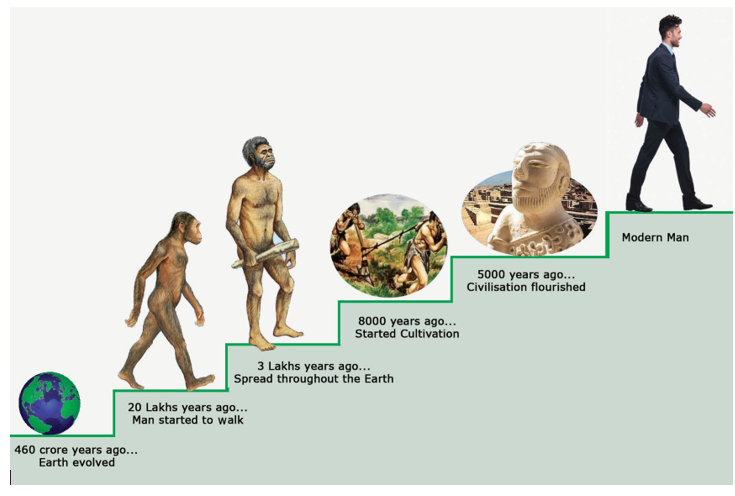
Tamilini, a school student of Class VI, visited a Science Centre accompanied by her grandmother. There they saw a time machine. The operator of the time machine explained the working of the machine.
Operator: If you press different buttons in the machine, it would take you to the chosen period of time. Why don’t you enjoy the experience of watching different periods of time using this machine?
(After listening to the operator, both Tamilini and her grandmother were excited and decided to have the experience of the time machine.)
Tamilini: Can we go forward and see how 2200 A D (C E) would be, grandma?
Grandma: What is so interesting about our future in 2200 A D (C E), Tamil? Let’s go backward and see how our past was like.
Do you know
The story of human evolution can be scientifically studied with the help of archaeology and anthropology.
Tamilini: You sound right, grandma.
Grandma pushed the button to 1950 A D (C E). They saw mostly people walking, a few riding bicycles and buses appearing rarely on the roads. Slowly they moved back to 1850. There were no buses or cycles. Carts pulled by mules and bullocks were seen on the roads. Horse-drawn cart was a rare occurrence.
Tamilini then turned the button to 8,000 years back. People were engaged in raising crops and livestock. She pushed the button to get a picture of life 18,000 years ago. She saw the humans living in caves. They were using tools made of stones and bones for hunting. Tamilini was frightened by the hunting scene and pushed the button forward to return to the present.
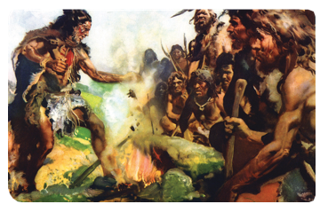
Grandma: Are you afraid, Tamil?
Grandma urged Tamilini to go further backward to see the ancient humans who lived with the apes. But Tamilini was not inclined. So, both of them left the spot.
Tamilini: Grandma, will you tell me the story of evolution of humans?
Grandma: Yes, certainly.
Grandma: Anthropologists have unearthed the footprints of humans in a country called Tanzania, which is in eastern Africa. They were found in rock beds submerged under the sand.
Info Bits
Archaeology is the study of pre historic humans remained materials used by pre historic humans. Excavated material remains are the main source for archaeological studies.
Info Bits
Anthropology is the study of humans and evolutionary history. The word anthropology is derived from two Greek words Anthropos meaning man or human and logos meaning thought or reason. Anthropologists attempt, by investigating the whole range of human development and behavior, to achieve a total description of cultural and social phenomena.
Radio carbon dating was used to ascertain the period. It was found out that the foot prints of humans they had discovered were about 3.5 million years old. When there is sudden change in nature, the living beings adapt themselves to the changes and survive. Humans have thus evolved over millions of years adapting themselves to the changing times.
Do you know
People and their Habitat
Australopithecus East Africa
Homohabilis South Africa
Homoerectus Africa and Asia
Neanderthal Eurasia (Europe and Asia)
Cro-Magnons France
Peking China
Homo sapiens Africa
Heidelbergs London
Info Bits
Cro-Magnons learned to live in caves. Lascaus caves in France is the evidence for cave living of Cro-Magnons. They habitude to bury the dead.
Migration of Homo sapiens from east Africa to other parts of the world.
![The image shows migration man from Africa to the rest of world in various time periods. 200 thousand years ago started from Africa. 100 thousand years ago they arrived to middle east Asia. 70 thousand years ago arrived to India and south east Asia and China. 50 thousand years ago arrived to Australia. 40 thousand years ago arrived to Europe. 25 thousand years ago arrived to present Russia. from Russia they migrate to north America via Alaska around 15000 years ago. From Australia they settled in New Zealand about 1500 years ago.](images/image-220.png)
Tamilini: Grandma, will you explain it in detail?
Grandma: Human evolution means the process through which the humankind changes and develops towards an advanced stage of life. See how the modern human has evolved.
1. Humans in erect position and walking on two legs happened much later.
2. Changes in thumb so that they can hold things tightly.
3. Development of brain.
Homo sapiens who migrated out of eastern Africa settled in different parts of the world. Their lifestyle also evolved and they made it suitable to the environs in which they lived. So, humans in different places adopted different forms of lifestyle. Based on the weather, climate and nature of the living place, their physique and complexion also differed. This resulted in the formation of different races. Human procreation resulted in an increase in the population.
HOTS
Why did humans become hunter- gatherers? Did the landscape play any role?
Tamilini: Grandma, it’s fantastic.
Grandma: Yes, it is. I shall now explain to you in detail how the Homo sapiens engaged in hunting and gathering.
Hunting and Food Gathering
Tamil, you will be surprised to know that millions of years ago, our ancestors led a nomadic life. They lived in groups in a cave or a mountain range. Each group consisted of 30 to 40 people. They kept on moving in search of food. They hunted pig, deer, bison, rhino, elephant and bear for food. They also ate the animals killed by other wild animals like tiger. They learnt the art of fishing. They collected honey from beehives, plucked fruits from the trees and dug out tubers from the ground. They also collected grains from the forest. Once the food resource got exhausted in one area, they moved to another place in search of food. They wore hides of animals and barks of trees and leaves for protecting their bodies during winter. So, humans began hunting to satisfy their need for food.
Hunting Methods
1. Go as a group and hunt the prey.
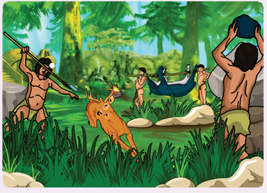
,2. Dig a pit and trap the animals and hunt.
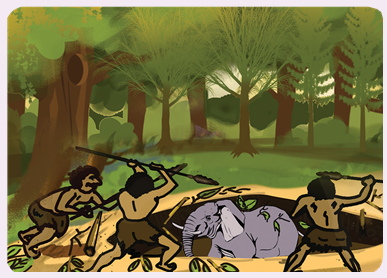
Art of Flaking
Keeping a stone in the bottom and sharpening it with another stone.
To make a stone tool, two stones were taken. One, was used as a hammer to sharpen the other for removing flakes.
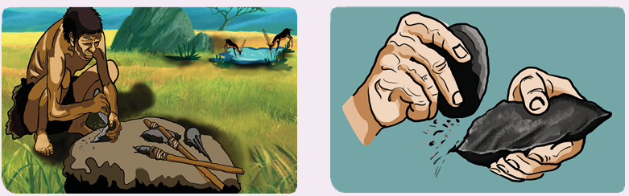
Grandma: Tamilini, do you know the weapons that the early humans used for hunting?
Tamilini: I have no idea, grandma. Can you tell me about hunting practices? Stone Tools and Weapons.
Grandma: Hunting was the main occupation of humans in the past. It was difficult for humans to kill a big animal with a stick or a stone. So, they decided to use sharpened weapons.
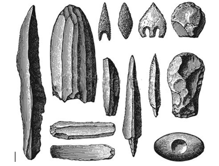
The best stone for the making weapons was chikki-mukki kal (flint). It is known for its strength and durability. Humans spent many hours in search of a flint stone. They made sharp weapons and tools with the help of the stones and fitted them with wood to grip them. Humans created tools like axes with big stones.
HOTS
Are there hunters in your area? Why is hunting banned now?
Tamilini: Why were axes made, grandma?
Grandma: The axes were made to cut trees, remove barks, dig pits, hunt animals and remove the skin of animals.
Grandma: Tamil, do you know what the next stage was after making stone tools?
Tamilini: I don’t know grandma. What would it be?
Grandma: Humans discovered the use of fire.
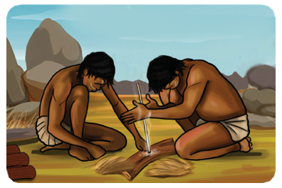
Do you know
Even today in the villages of Nilgiris district in Tamil Nadu, people have the habit of making fire without use of match box.
At first, humans were afraid of fire and lightning. Probably fire caused by lightning had killed many wild animals. Humans tasted the flesh of the killed animals, which was soft and tasty. This made humans aware of the effect of fire. They used flint stone to make fire and used it to protect them from predators, for cooking food and for creating light during night. Thus, fire became important for man in olden times.
HOTS
Is there any object that can bring heat and fire other than a match box?
Tamilini: What next, grandma?
Grandma: You will be surprised to know that the next human invention was the wheel. This was the first scientific invention of humans using their brain and cognitive skills.
Invention of the Wheel
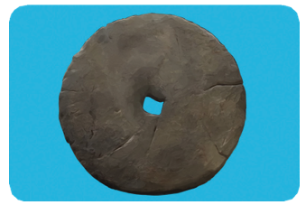
The invention of wheel by humans is considered to be the foremost invention When humans saw the stones rolling down from the mountains, probably they would have got the idea of making the wheel.
Pot Making
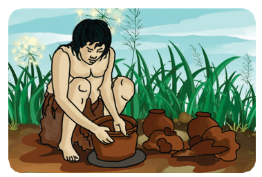
Humans learned to make pot with clay. The invention of wheel made pot making easier, and the pots made were burnt to make it stronger. They decorated pots with lot of colors. The color dyes were made from the extracts of roots, leaves or barks. These natural dyes were used in rock paintings.
Grandma: Can you identify what is in this picture?
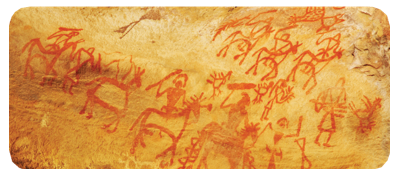
Hunting scene in which men and women are taking part
Tamilini: Yeah. Some blurred tweaks are seen. Someone has drawn.
Grandma: No, this is our ancestor’s handwork. In fact, it is the first art of humanity. Before the use of language, humans expressed their feelings through actions and also recorded it in rock paintings.
Ancient Rock Paintings
In India, we can see many paintings in rocks and caves. The rock paintings give some information about the past. Approximately there are 750 caves, in which 500 caves have paintings. There are many more undiscovered caves. The rock paintings depict hunting pictures of the male and the female, dancing pictures and pictures of children playing.
Tamilini: Oh! We are able to gain some knowledge about the past lifestyle through these paintings. Isn’t it, Grandma?
Grandma: You said it rightly, Tamil. These rock and cave paintings tell us many stories about our ancestors.
Tamilini: Okay, grandma! Now tell me how humans reached the next stage.
Grandma: There were many dangers involved in hunting. Due to large-scale hunting in the mountain areas and in the forests, many animals became extinct. Non availability of meat forced the humans to look for fruits and vegetables for food.
Tamilini: Now they would have thought of producing food for themselves. Is it not grandma?
From Nomadic to Settled Life The World’s Earliest Farmers
Grandma: Very well said, Tamil. The seed of fruits and the nuts they ate were thrown into the soil. During rains, the soil gave it life. Some days later, the saplings sprouted from the soil. By observation and logic, they learn that:
a. a plant grows from a single seed and yields lots of fruits and vegetables.
b. seeds that fall in the river beds sprout easily.
c. plants grow faster in water fed areas.
d. alluvial soil is more suitable for plant growth than any other.
With the above knowledge they gained, they realised that with proper sowing and nurturing, they could increase the number of plants more than the ones that grew naturally. Thus, agriculture and farming came into existence. They domesticated the animals and used them in their farming.
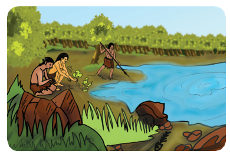
Breeding of animals now became an important part of their life. Oxen were used for ploughing. Oxen made the practice of agriculture easier. Life was becoming organized than it was, when they were hunting. It enabled them to settle down in a place. Now with settlement came the problem of utensils and vessels for cooking and storage. The potter’s wheel and fire solved this problem.
The invention of plough helped the farming practices. Farming started with the clearing of land and burning the left-over shrubs. They ploughed the land, sowed seeds in them and harvested the produce.
During the pre-historic period, humans lived in caves and depicted their daily events in drawings. Mostly pictures of animals were drawn.
Pre-Historic Rock Art of Tamilnadu
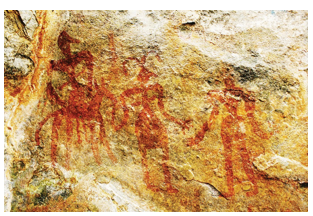
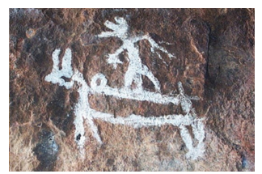
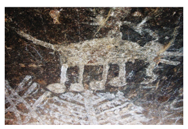
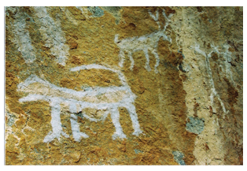
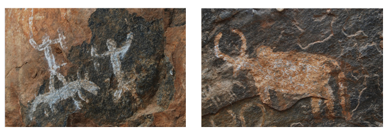
Once the fertility of the soil decreased, they moved to a new place. Initially agriculture was done for immediate food requirement. Later when they found out ways to increase production, they started storing the produce. The food products stored were used during the lean harvest periods. By their experience, they understood that land close to the river side was suitable for farming. So, they decided to stay there permanently.
Tamilini: How about domestication of animals, grandma?
Grandma: Humans thought of ways to better their skills at hunting.
They found out that the dogs could sniff other animals and chase them away. So, humans found them useful for hunting. Thus, dogs became the first animal to be domesticated by humans. Following the dogs, they started domesticating hen, goat and cow.
Tamilini: What next?
Grandma: Humans stayed on the plains for a long time. During this period, they have not only learnt agriculture, but slowly developed skills of handicraft. Permanent settlement in a place increased the yield of crops. Now they had grains in excess of what they consumed. The surplus grains were exchanged with other groups for the other things they were in need of. This is called the barter system. Thus, trade and commerce developed and towns and cities emerged.
Tamilini: Thank you, grandma. The information you have shared with me is very helpful, and I would share it with my friends at school tomorrow.
Grandma: Very good. Congratulations Tamilini!
Evolution means the process in which humankind changes and develops into an advanced stage.
Homo sapiens migrated out of eastern Africa and settled in different parts of the world.
Humans with the help of the Chikki-mukki – kal (flint) made sharp weapons and tools.
Fire was used by early human to protect him from predators, for cooking food and for the light during night.
The invention of wheel is considered to be the foremost invention. It made pot making easier.
We get knowledge about the past lifestyle through rock paintings.
1. |
Time machine |
- |
a machine capable of taking a person backward or forward in time |
2. |
Evolution |
- |
gradual change leading to a more advanced development |
3. |
Predator |
- |
animal that hunts and kills other living things for food |
4. |
Footprints |
- |
the impression of the foot of a person or an animal |
5. |
Hides |
- |
tanned skin of an animal |
6. |
Million |
- |
1,000,000 (10 lakhs) |
7. |
Nomadic |
- |
Herdsmen without any fixed home moving about in search of pastures for their cattle. |
8. |
Barter |
- |
Exchange of goods without involving money |
9. |
Prey |
- |
An animal that is hunted and killed by another for food |
1. The process of evolution is dash
a. direct
b. indirect
c. gradual
d. fast
2. Tanzania is situated in the continent of dash
a. Asia
b. Africa
c. America
d. Europe
1. Statement: Migration of man of different Parts of the world resulted in changes of physic and colour
Reason: climatic changes.
a. Statement is correct.
b. Reason is wrong.
c. Statement and Reason is correct.
d. Statement and Reason is wrong.
a. Australopithecus - Walked on both legs
b. Homo habilis - Upright man
c. Homo erectus - Wise man
d. Homo Sapiens - Less protruding face
1. dash unearthed the footprints of early humans in Tanzania.
2. Millions of years ago, our ancestors led a dash life.
3. The main occupations of the ancient humans were dash and dash
4. The invention of dash made farming easier.
5. Rock paintings are found at dash in Nilgiris.
1. Anthropology is the study of coins.
2. Homo erectus (Java man) had the knowledge of fire.
3. The first scientific invention of humans was wheel.
4. Goat was the first animal to be domesticated by humans.
1. What method is used to find out the age of the excavated materials?
2. What did early humans wear?
3. Where did early humans live?
4. Which animal was used for ploughing?
5. When did humans settle in one place?
1. What is evolution?
2. Write any two characteristics of Homo sapiens?
3. Why did humans move from place to place?
4. Describe the ancient methods of hunting?
5. Why were axes made?
6. How would you define archaeology?
7. What do you know about anthropology?
1. Importance of invention of wheel from the ancient period to the modern period.
Prepare an album collecting the pictures of ancient humans of different ages.
The invention of dash made pot making easier. Answer: dash |
Barter system Means dash Answer: dash |
Name any two weapons used by early human for hunting. Answer: dash |
Which is the best stone for making weapons? Answer: dash |
Towns and cities emerged because of dash and dash Answer: dash |
Which was the first scientific invention of humans? Answer: dash |
Identify the pictures in rock paintings. Answer: dash |
Which was the main occupation of early humans? Answer: dash |
What do cave paintings tell us? Answer: dash |
Where did the early humans live? Answer: dash |
Dash is related to the field of archaeology. Answer: dash |
Name any two animals domesticated by early human. Answer: dash |
1. Make pots and tools by using clay.
2. Collect different types of moving dolls and tell them to change the wheels with different shapes like square, triangle etc., and find out how it moves.
On the outline map of India, mark the following places:
1. Adichanallur
2. Attirampakkam
3. Bhimbetka
4. Hunasagi Valley
5. Lothal
1. www.humanorgins.sid.edu
![This image shows ICT cornor which is helpful to study human evolution. The steps for using this ICT corner, Type the given URL in the browser. Human evolution timeline interactive page will open. in the pictography horizontal bottom blue line indicates major milestone in human evolution and pink colour indicates species. interact with the pictography by clicking and object on the graph. click the milestones to know the achievement of human during the period. the purple colour on the top of the pictograph indicates the climate fluctuation that shaped the evolution. Click the brushed reddish colour to identify the species name, and its brief history on duration and geographical range. the species range from sahelanthropus tchadensis to homo sapiens. use magnifier button to enlarge a particular space on the timeline. Time line project URL http://humanorgins.si.edu/evidance/human-evolution:timeline-interactive. also it contains a QR code with reference number K4PG7](images/image-238.png)